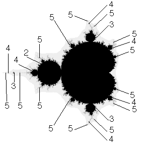

| Near the arcs we have written the period of the corresponding
cycle, and so the period of
the component of M formed when the arc is collapsed to a point. |
| For example, the 2 near
the arc from 1/3 to 2/3 indicates this arc collapses to the point of tangency between
the fixed point component (the big cardioid) and the large (2-cycle) disc. |
| The 3 near
the arcs from 1/7 to 2/7 and from 5/7 to 6/7 indicate where the 3-cycle discs attach
to the big cardioid, and so on for those arcs bounding the region containing the center of
the unit circle. |
| If two components of M are tangent, the smaller period must divide
the larger period. |
| So what about the period 4 arc connecting 3/15 and 4/15? The period division
condition just mentioned prohibits this from collapsing to the point of tangency of a
3- and a 4-cycle component, so this period 4 arc must collapse to the root of a
4-cycle midget in the limb of M containing this 3-cycle component. |
| Similarly, the period 5 arcs connecting 5/31 to 6/31 and 7/31 to 8/31 collapse to
the roots of 5-cycle midgets in the same limb. |
| For comparison, here are some of the of the corresponding
features of the Mandelbrot set. |
 |
 |
|